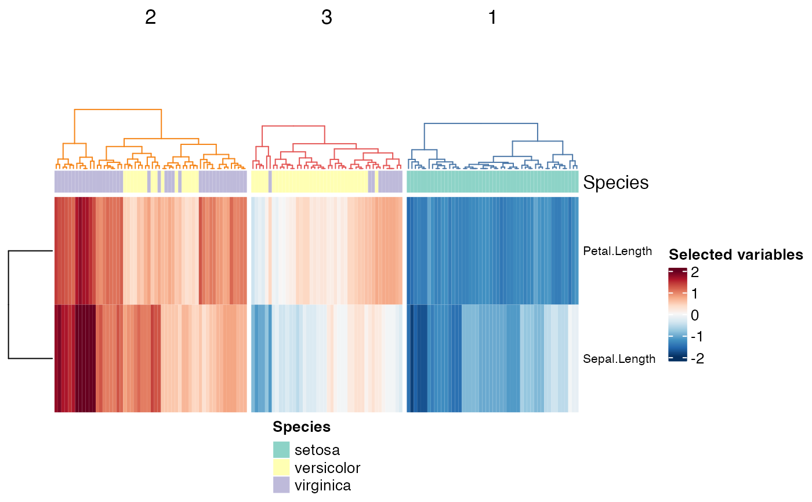

Plot heatmap with cluster results and dendrogram
cluster_heatmaps( scaled_selected_data, clusters, k, cluster_colors, scaled_unselected_data = NULL, annotation = NULL )
| scaled_selected_data | scaled matrix or data frame with variables used for clustering |
|---|---|
| clusters | hierarchical cluster results produced by |
| k | targeted number of clusters |
| cluster_colors | list of cluster colors to match with boxplots |
| scaled_unselected_data | (optional) scaled matrix or data frame with variables not used for clustering |
| annotation | (optional) ComplexHeatmap::columnAnnotation object |
dmat <- compute_dmat(iris, "euclidean", TRUE, c("Petal.Length", "Sepal.Length")) clusters <- compute_clusters(dmat, "complete") species_annotation <- create_annotations(iris, "Species") cluster_heatmaps(scale(iris[c("Petal.Length", "Sepal.Length")]), clusters, 3, visxhclust::cluster_colors, annotation = species_annotation) 